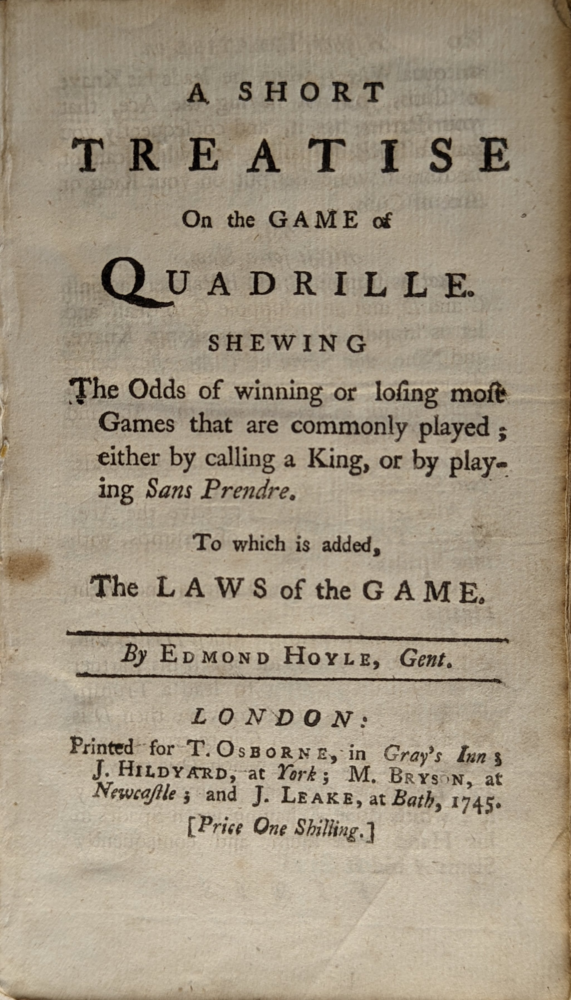

A Descriptive Bibliography of Edmond Hoyle
Copyright © 2014-26 by David Levy
(page updated 2026-01-30)User Guide
Quadrille.1.2
A Short Treatise on the Game of Quadrille, printed for T. Osborne et al, first London edition, second issue, 1745.
 |
Title: | A SHORT | TREATISE | On the GAME of | Quadrille. | SHEWING | The Odds of winning or loſing moſt | Games that are commonly played; | either by calling a King, or by play-|ing Sans Prendre. | To which is added, | The LAWS of the GAME. | [rule] | By Edmond Hoyle, Gent. | [rule] | LONDON: | Printed for T. Osborne, in Gray's Inn; | J. Hildyard, at York; M. Bryson, at | Newcaſtle; and J. Leake, at Bath, 1745. | {Price One Shilling.} |
| Collation: | 12o: A12(±A2) B12(−B11) [$1–5 (−A2) signed]; 23 leaves, pp. [1–5] 6–44 [47–48] =46 |
| Contents: | Signature (Page) Reference | Contents | Signature (Page) Reference | Running Titles |
| A1r–A1v (1–2) | see Quadrille.1.1 | |||
| A2r (3) | title | |||
| A2v (4) | blank | |||
| A3r–B10v (5–44) | see Quadrille.1.1 | A3v–B10v (6–44) | see Quadrille.1.1 | |
| B12r–B12v (47–48) | see Quadrille.1.1 |
| Catchwords: | B10v(44) To [none] |
| Publisher: | Thomas Osborne |
| Printer: | John Watts |
| Notices: | 1745-10-26 London Evening Post: "A Treatise on the Game of Quadrille , price 1s." Advertised with Whist.6, Piquet.1.2, Backgammon.2, Laws.2, and Osborne collection. |
| Price: | 1s. (title, advertisement) |
| References: | ESTC T179997, Horr 652, Jessel 782, Marshall s7 no.8 p263 (1889-10-05), Rather 22 |
| Copies Seen: | NvLN [GV1295.H68 1745]; Levy [1787] |
| Copies Seen in Collections: | O [Jessel f.544(2)] (see Osborne.A); O [Jessel f.546(2)] (see Osborne.B); Copisarow (see Osborne.B); CSFU [GV1277.H89 1746] (see Osborne.B); DLC [GV1277.H89 1746] (see Osborne.B); DLC [GV1277.H89 1747] (see Osborne.D); NvLN [GV1241.H69 1746] (see Osborne.B); NvLN [GV1277.H69 1747b] (see Osborne.D); OCl [789.87H F46L] (see Osborne.B); PPL [Iu Hoyl Allen 333 no.2] (see Osborne.A); Levy [1617] (see Osborne.B); Levy [2097] (see Osborne.A) |
| Other Copies: | IU [795.49 H85S] |
| Other Copies in Collections: | Sings (see Osborne.B); Beauchene (see Osborne.B); Beauchene (see Osborne.D); AuVSL [793 H85 (1746)] (see Osborne.B) |
| Notes: | When Thomas Osborne acquired the Hoyle copyright from Francis Cogan, he also acquired some unsold stock and issued it with cancel titles. See also Piquet.1.2. In this reissue, B11 was deleted because it contained advertisements of other books printed for Cogan, introducing the catchword anomoly at B10.DLC [GV1277.H89 1747] is unusual in that it retains the two leaves intended be deleted, A2 and B11, and has the replacement title bound before the half title. |